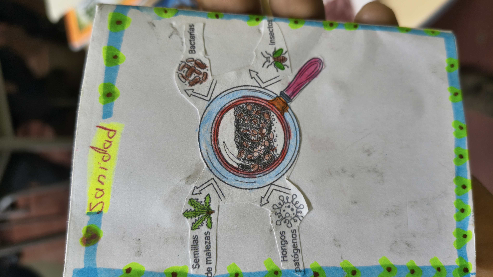
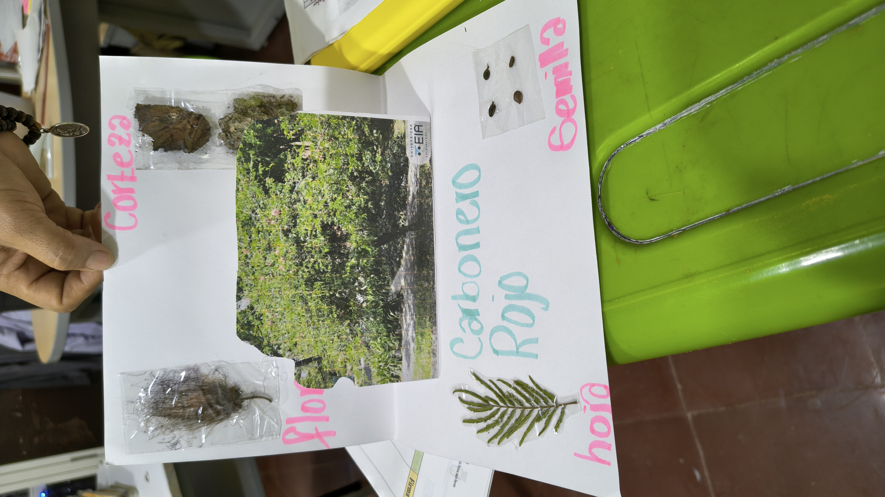
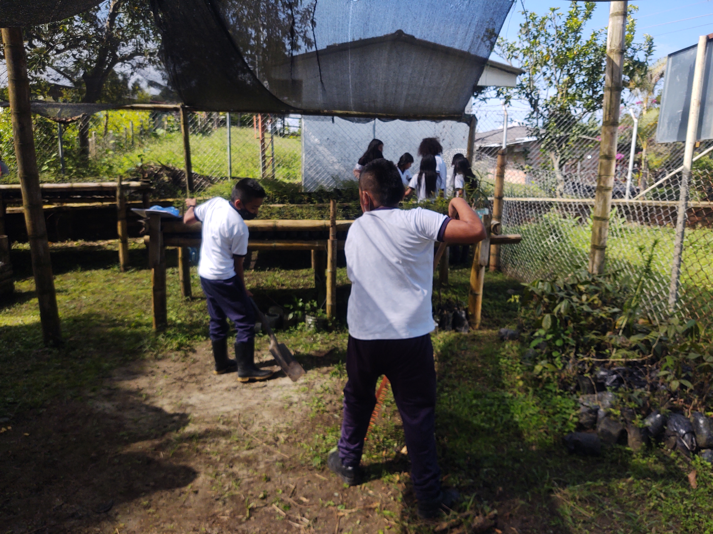

🌱 Monterredondo
Vivero Escolar - I.E.A Monterredondo
Vereda Monterredondo
Miranda, Cauca
Vivero Escolar - I.E.A Monterredondo
Vereda Monterredondo
Miranda, Cauca
10 años
3.000 árboles
| Grupo | Cantidad |
|---|---|
| 👧 Niñas | 9 |
| 👦 Niños | 17 |
| 👩 Mujeres adultas | 2 |
| 👨 Hombres adultos | - |
| Total | 27 |
El vivero Monterredondo busca fortalecer el sentido de pertenencia, el respeto y el cuidado por la naturaleza dentro de la comunidad educativa y la vereda. Su trabajo está orientado a recuperar especies nativas afectadas por la tala y las quemas, promoviendo procesos de restauración ambiental y formación integral de los estudiantes.
El vivero fue creado en 2016 como una iniciativa promovida por CORPOPALO y liderada inicialmente por la docente Beatriz Eugenia Ibarra, encargada de las áreas de Biología, Química y Emprendimiento..
Inicialmente el trabajo se desarrollaba únicamente con estudiantes de grados décimo y once. Sin embargo, se identificó la necesidad de garantizar continuidad en los procesos formativos, por lo que posteriormente se integraron estudiantes desde grado sexto hasta once..
Actualmente el vivero forma parte del proyecto ambiental escolar (PRAE) de la institución, fortaleciendo su sostenibilidad y articulación curricular.
El vivero constituye un espacio de aprendizaje práctico donde los estudiantes participan en actividades de siembra, mantenimiento, fertilización, control de arvenses, riego y monitoreo de especies.
El proceso se articula con diversas asignaturas, fortaleciendo aprendizajes interdisciplinarios relacionados con lenguaje, matemáticas, biología y educación artística.
El vivero produce especies forestales, ornamentales y de interés ecológico para procesos de restauración, protección de fuentes hídricas y fortalecimiento de coberturas vegetales.
| Nombre Común | Nombre Cientifico |
|---|---|
| Nacedero | Trichanthera gigantea |
| Flor amarillo | Senna spectabilis |
| Chicalá | Tecoma stans |
| Cedro Rosado | Cedrela odorata |
| Guamo Machete | Inga edulis |
| Iraca | Carludovica palmata |
| Lechero rojo | Euphorbia cotinifilia |
| Gualanday | Jacaranda caucana |
| Guayacán Rosado | Tabebuia rosea |
| Guayacán amarillo | Handroanthus crhysantus |
| Guayacán de Manizales | Lafoensia acuminata |
| Chachafruto | Erythrina edulis |




Responsable del proceso: Sulma Corrales Alzate
Rol: Docente dinamizadora
Teléfono: [TELEFONO]
Correo: [CORREO]